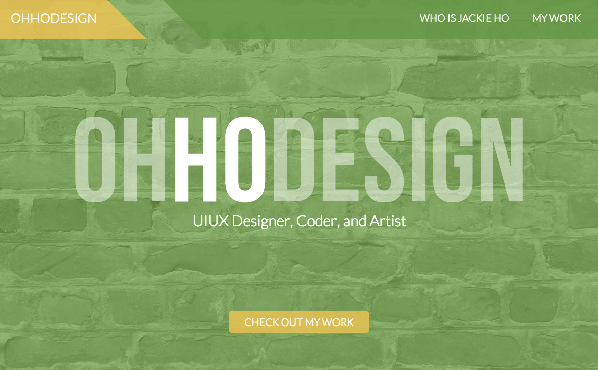
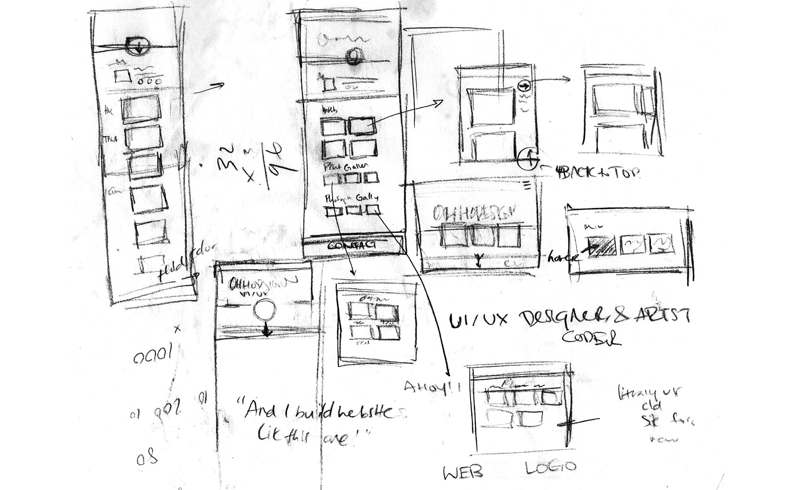
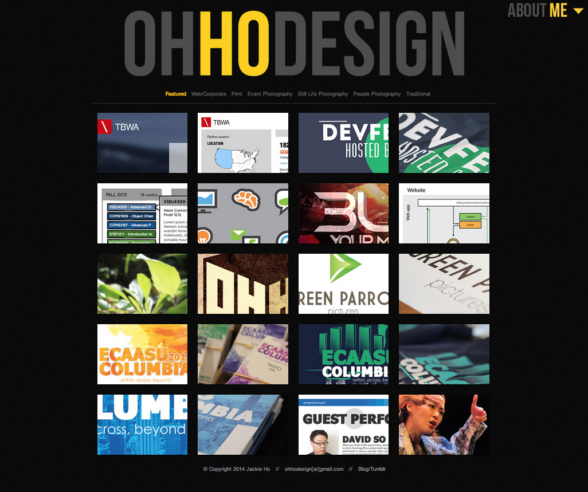
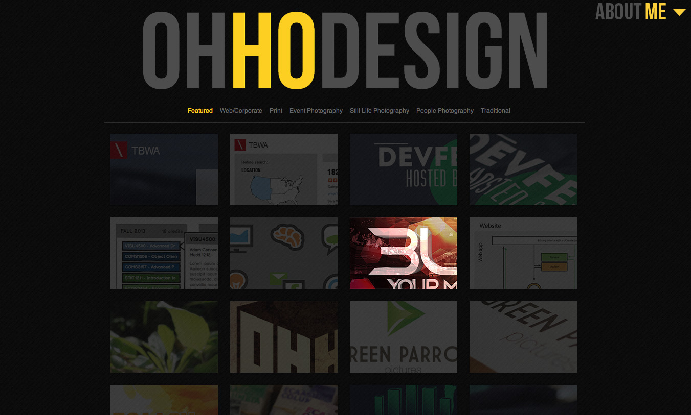
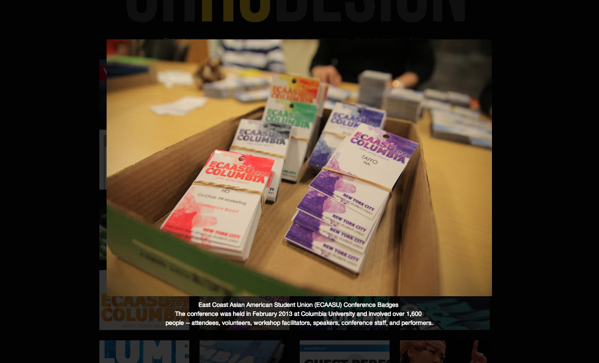
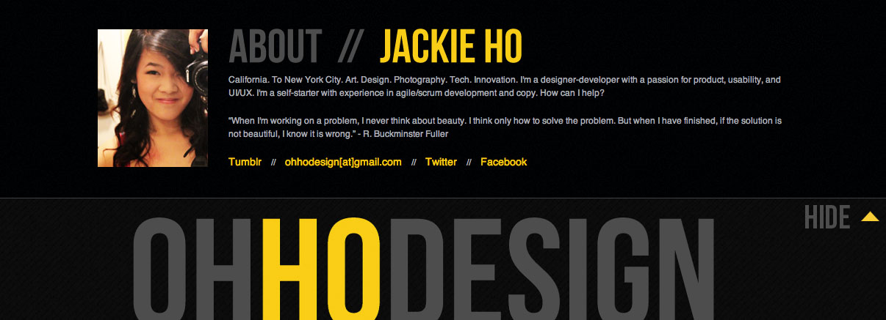

After 1.5 years with my old side, I decided I needed to refocus my site on my web and UIUX work. My previous site (shown below), while eye-catching with a variety of images, lacked a voice and a personal touch.
Drumstick turducken leberkas filet mignon tongue, biltong beef ribs spare ribs corned beef jerky prosciutto tri-tip tenderloin rump. Drumstick fatback ribeye pork loin turkey. Andouille pork ground round pastrami pork loin kevin ball tip landjaeger, porchetta beef. Leberkas tongue beef venison ribeye bresaola pork short ribs ham tenderloin drumstick rump sirloin ground round. Capicola sirloin venison pork spare ribs.
 Previous Design:
   